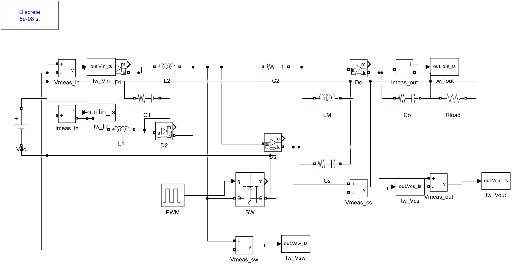
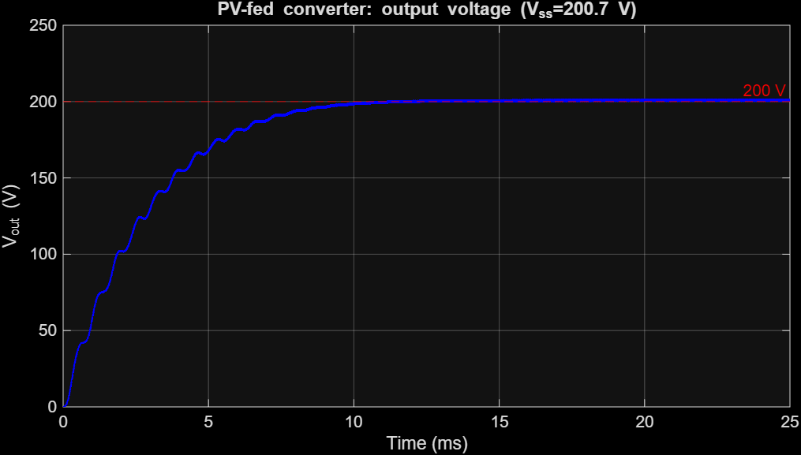
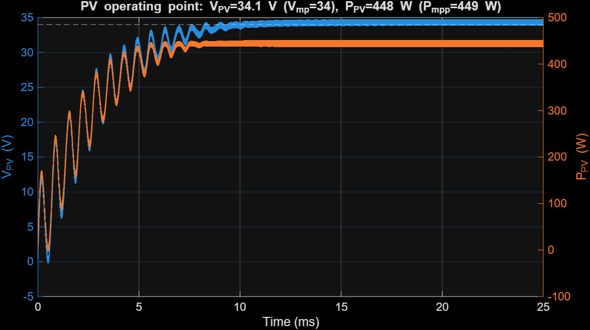
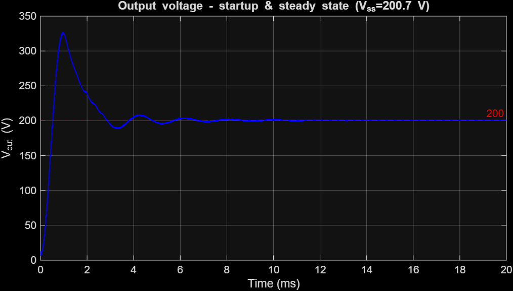
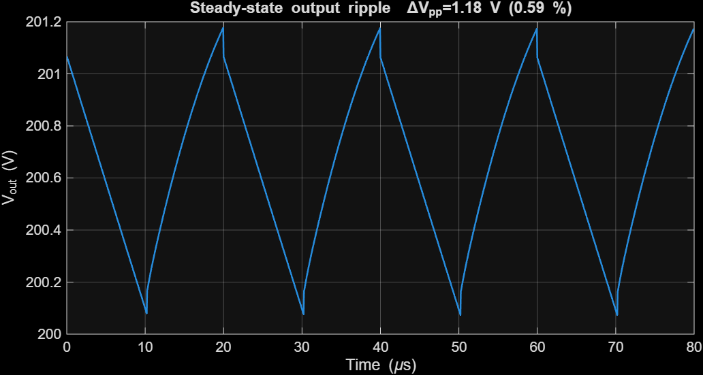
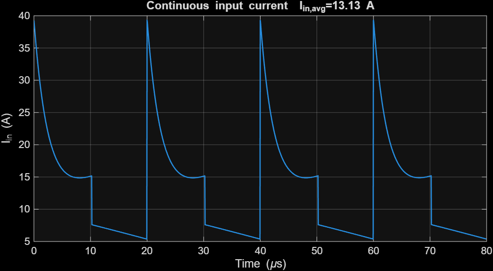
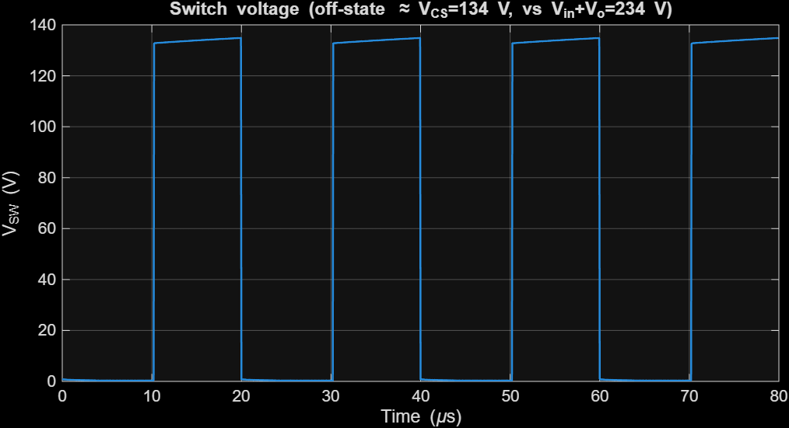
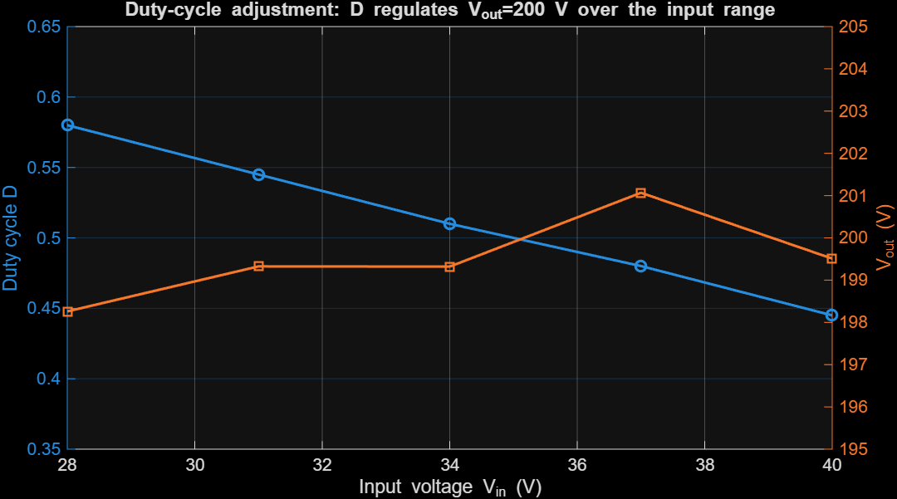
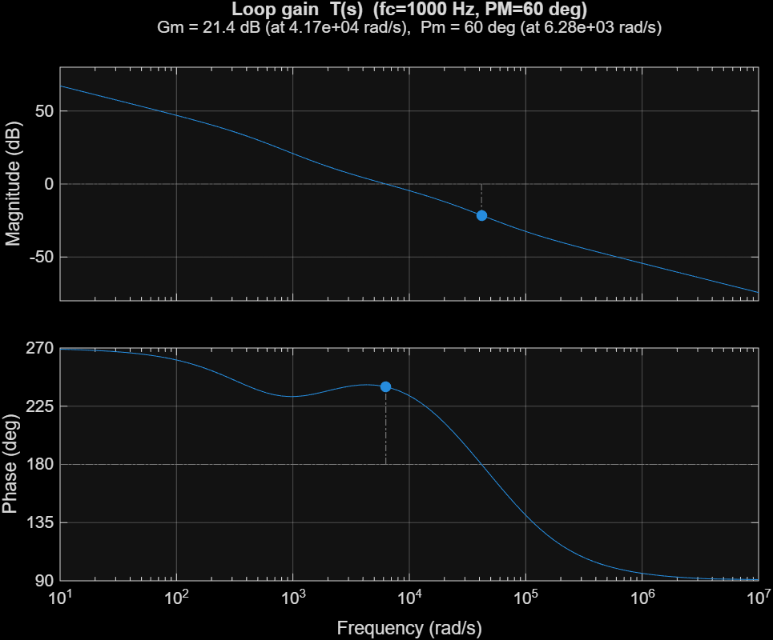
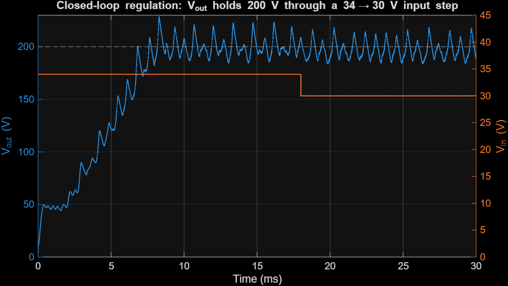

This report presents the complete design and analysis of a high-gain, non-isolated switched inductor-capacitor (SI-C) SEPIC DC–DC converter intended to interface a single photovoltaic (PV) module to a 200 V DC bus. The converter steps the panel voltage (open-circuit voltage Voc ≈ 40 V) up to five times Voc (200 V) while delivering the required 2 A (400 W) output. The topology, gain relation M = 2(1+D)/(1−D), and the decision to avoid a coupled inductor are grounded in the group's prior literature review of recent (2023–2025) high-gain SEPIC research. The work covers topology justification, full analytical design calculations, a MATLAB/Simulink (Simscape Electrical) simulation for both a PV source and a variable DC source, and a realistic analog PWM control circuit. The simulation confirms the design: from a PV array the converter operates the panel at 99.9 % of its maximum-power point and delivers a regulated 200.7 V / 2.0 A output with 0.55 % voltage ripple at ≈ 90 % efficiency; the simulated switch voltage stress (133 V) matches the analytical value 2Vin/(1−D) and is far below the Vin+Vo = 234 V of a conventional SEPIC.
Photovoltaic modules deliver a low, weather-dependent DC voltage (typically 20–45 V at the maximum-power point for a single module), whereas DC microgrids, storage links and grid-tied inverters require a stable 200–400 V DC bus. A high step-up DC–DC stage is therefore mandatory at the module level.
The single-ended primary-inductor converter (SEPIC) is an attractive interface because it provides (i) non-inverted step-up/step-down operation and (ii) continuous input current, which reduces PV-side current ripple and improves the effective utilisation of the panel. However, the classical SEPIC voltage gain Vo/Vin = D/(1−D) cannot economically reach the 5–6× ratio required here: a 5.9× ratio would demand a duty cycle of D ≈ 0.855, where conduction losses, diode reverse-recovery, and component voltage stress become prohibitive and the real (lossy) gain saturates well below the ideal curve.
This project therefore designs a high-gain SEPIC variant that reaches the required ratio at a moderate duty cycle. The remainder of the report (i) motivates the design from the literature, (ii) justifies the chosen topology, (iii) derives the full analytical design, (iv) validates it in MATLAB/Simulink, and (v) presents a realistic analog control circuit.
| Quantity | Symbol | Value | Notes |
|---|---|---|---|
| PV open-circuit voltage | Voc | 40 V | single 60-cell-format module (~450 W class) |
| PV max-power voltage | Vmp | 34 V | nominal full-load input |
| PV max-power current | Imp | 13.2 A | |
| Output voltage | Vout | 200 V | = 5 × Voc (requirement: 5–6 × Voc) |
| Output current | Iout | 2 A | requirement (fixed) |
| Output power | Pout | 400 W | |
| Switching frequency | fsw | 50 kHz | design choice (Sec. 3.3) |
| Target output ripple | ΔVout | ≤ 1 % (2 V) | design target |
The group's pre-submission literature review surveyed eight peer-reviewed high-gain SEPIC converters published between 2023 and 2025 [1]–[8], spanning switched-inductor, switched-capacitor / voltage-multiplier, coupled-inductor, quadratic, interleaved and multiport variants. A Gain-to-Component-Ratio (GCR) metric introduced in that review ranked the coupled-inductor design of Abdi et al. [5] highest (GCR ≈ 1.63) and the switched-inductor HGSC of Jayanthi et al. [8] second (GCR ≈ 1.42), and showed that the design space does not converge on a single best topology — topology choice must follow the application profile.
For a single low-power PV module feeding a 200 V bus, the dominant priorities are: a moderate duty cycle for efficiency, simple and robust magnetics, low semiconductor stress, and a control loop that is straightforward to implement with analog hardware. Two findings from the review directly shape our design:
Design decision D1 — high gain without a coupled inductor. Chandra & Gaur [4] demonstrate a switched inductor-capacitor (SI-C) SEPIC that reaches an 11× gain without any coupled inductor or transformer, with an analytical efficiency of 89.83 % versus 82.47 % for a classical SEPIC under matched conditions. Eliminating the coupled inductor removes leakage-inductance turn-off voltage overshoot, simplifies the magnetic design, and reduces the EMI-shielding burden. We adopt this SI-C, non-coupled approach as the backbone of our converter.
Design decision D2 — switched-capacitor cells reduce semiconductor voltage stress. Jayanthi et al. [2] report that an interleaved high-gain modified SEPIC lowers the maximum switch voltage by ≈ 54 % relative to a conventional interleaved boost, and Sumathy et al. [3] show that adding diode-capacitor multiplier cells raises gain without increasing switch voltage stress. We exploit the same principle: the SI-C cell lets us select a lower-voltage, lower-RDS(on) MOSFET than the Vin + Vout worst-case bound would suggest, improving conduction efficiency.
A third, secondary lesson from Jayanthi et al. [8] — minimising the diode count to limit reverse-recovery losses — informs our component-selection preference for fast SiC Schottky diodes.
Compared with the conventional boost converter, the SEPIC offers two decisive advantages for a PV interface:
The required conversion ratio referenced to the operating point is M = Vout/Vmp = 200/34 ≈ 5.9. For a classical SEPIC this needs D ≈ 0.855 (Sec. 4.1). At such a duty cycle:
A conventional boost is even worse: its ideal gain 1/(1−D) would also force D ≈ 0.83 and it lacks the SEPIC's input/output decoupling. A high-gain topology is therefore required to reach 5–6× at a moderate, efficient duty cycle.
Following design decisions D1 and D2, we implement the non-coupled SI-C high-gain SEPIC of Chandra & Gaur [4]. Its ideal CCM voltage gain is
M = V_out / V_in = 2(1 + D) / (1 − D)
which delivers the required 5.9× ratio at D ≈ 0.49 — a moderate duty cycle with comfortable transient headroom, versus D ≈ 0.855 for a classical SEPIC at the same ratio. The converter uses one main MOSFET, three inductors, four capacitors, and four diodes, with no transformer or coupled inductor.
The circuit (Fig. 1) uses one MOSFET (SW), three inductors (L1, L2 forming the switched-inductor cell and the main inductor LM), four diodes (D1, D2 in the cell; Ds, Do at the output) and four capacitors (C1 in the cell; the series capacitor C2; the energy-transfer capacitor Cs; the output capacitor Co).

Operating modes (CCM). When SW is ON, the input charges L1, L2 and C1 in parallel (Ds, Do blocked), so VL1 = VL2 = VC1 = Vin. When SW is OFF, L1–C1–L2 act in series and transfer energy to the output through C2/Do and to Cs through Ds. Applying volt-second balance to L1/L2 and to LM gives VCS = 2Vin/(1−D) and the static gain M = 2(1+D)/(1−D) — the relation used throughout the design.
Design choice — switching frequency. fsw = 50 kHz is selected as a balance between passive-component size (which scales as 1/fsw) and switching losses at the 400 W power level; it also keeps the gate-drive and analog-PWM design comfortably within the range of standard PWM controller ICs. The reviewed prototypes operate between 21 kHz [8] and 50 kHz [3],[6], confirming 50 kHz as a representative, realisable choice.
All quantities below are produced by the design script design/sepic_design.m (MATLAB R2025b). CCM operation, ideal switching, and an assumed 92 % efficiency are taken as base assumptions.
From M = 2(1+D)/(1−D), solving for D gives D = (M − 2)/(M + 2). At the nominal operating point (Vin = Vmp = 34 V, Vout = 200 V, M = 5.88):
With Pout = 400 W and η = 92 %, Pin = 435 W and the source current is Idc = G·Iout/η = 12.8 A, below the panel's Imp = 13.2 A — confirming the panel can supply the demanded power. The two switched inductors share the input current: IL1 = IL2 = Idc/(1+D) ≈ 8.6 A (peak ≈ 9.7 A); the main inductor carries ILM = Iout/(1−D) ≈ 3.9 A. The conservative switch peak current is IL1 + IL2 + ILM ≈ 22 A.
Exact (ideal) node voltages from the volt-second/charge balance of [4]: VC1 = Vin = 34 V, V_CS = 2V_in/(1−D) = 134 V, VC2 = D·VCS = 66 V, VCO = VC2 + VCS = 200 V (= Vout, a consistency check).
| Component | Chosen value | Sizing criterion |
|---|---|---|
| L1 = L2 (switched inductors) | 150 µH | ΔIL = 30 % of 8.6 A |
| LM (main inductor) | 330 µH | ΔILM = D·Vin/(LM·fsw), 30 % |
| C1 (switched-cap) | 47 µF | ΔVC1 ≤ 5 % of Vin (= 34 V) |
| C2 (series cap) | 22 µF | ΔVC2 ≤ 5 % of 66 V |
| Cs (energy-transfer) | 10 µF | ΔVCs ≤ 5 % of 134 V |
| Co (output cap) | 22 µF | ΔVout ≤ 1 % (2 V) |
The SI-C cell keeps the semiconductor voltage stresses well below the conventional Vin + Vo = 234 V bound (design decision D2):
| Device | Voltage stress | Current | Selection (30 % derating) |
|---|---|---|---|
| Switch SW | VCS = 134 V | ≈ 22 A peak | 200 V-class low-RDS(on) MOSFET, ≥ 30 A (e.g. IRFB4227 / IPP200N25) |
| D1, D2 | Vin + VC1 = 68 V | switched-L current | 100 V fast Si/SiC diode |
| Ds | VCS = 134 V | pulsed | 200 V SiC Schottky |
| Do | Vo − VC2 = 134 V | Iavg = 2 A | 200 V SiC Schottky, ≥ 5 A |
SiC Schottky diodes are chosen for Ds/Do for negligible reverse-recovery loss at 50 kHz (a lesson carried from [8]); the 200 V rating leaves margin over the 134 V stress. The ground-referenced switch needs only a simple low-side gate driver (Sec. 6).
The converter was built programmatically in MATLAB R2025b using Simscape Electrical
(Specialized Power Systems). The power stage of Fig. 1 — one MOSFET (RDS(on)=20 mΩ),
four diodes, three inductors and four capacitors (30 mΩ ESR) — is assembled by the shared
function add_sic_sepic_stage.m, so the two required cases use an identical converter.
A discrete solver (Ts = 50 ns, i.e. 400 points per switching period) is used with a
powergui block. The MOSFET is driven by a 50 kHz PWM signal.
build_sepic_pv.m → sepic_sic_pv.slx)A Simscape Electrical PV Array (single user-defined module: Voc=40 V, Isc=13.9 A, Vmp=34 V, Imp=13.2 A, 72 cells, ~449 W) at 1000 W/m², 25 °C feeds the converter through a 100 µF input decoupling capacitor. With the duty fixed at D = 0.513 the system settles at:
| Quantity | Simulated | Reference |
|---|---|---|
| PV operating voltage | 34.1 V | Vmp = 34 V |
| PV operating current | 13.1 A | Imp = 13.2 A |
| PV power | 448.4 W | Pmpp = 449 W → 99.9 % of MPP |
| Output voltage | 200.7 V | 200 V target |
| Output current | 2.01 A | 2 A |
| Output ripple | 1.11 V (0.55 %) | ≤ 1 % |
| Conversion efficiency | 89.9 % | — |
Because the converter's reflected input resistance (≈ Rload/G² = 2.9 Ω) is close to the panel's MPP resistance (Vmp/Imp = 2.6 Ω), the operating point sits essentially at the MPP without any explicit MPPT loop. The PV-fed output rises smoothly to 200 V (Fig. 5a), and the PV voltage/power converge to the MPP (Fig. 5b).


build_sepic_model.m → sepic_sic_dc.slx)Replacing the panel with a controllable DC source (Vin = 34 V) and D = 0.513:
| Quantity | Simulated | Analytical |
|---|---|---|
| Output voltage | 200.7 V | 200 V |
| Output ripple ΔVpp | 1.18 V (0.59 %) | ≤ 1 % design target |
| Output current | 2.01 A | 2 A |
| Input current (avg) | 13.1 A | 12.8 A |
| Energy-transfer node VCS | 133.1 V | 134.0 V = 2Vin/(1−D) |
| Efficiency | 90.2 % | — |




duty_adjustment_demo.m)Sweeping the input voltage (as a panel would vary with irradiance/temperature) and adjusting the duty cycle to hold Vout = 200 V demonstrates the regulation range required by the assignment:
| Vin (V) | D (ideal) | D (set) | Vout (V) |
|---|---|---|---|
| 40 | 0.429 | 0.445 | 199.5 |
| 37 | 0.460 | 0.480 | 201.1 |
| 34 | 0.493 | 0.510 | 199.3 |
| 31 | 0.527 | 0.545 | 199.3 |
| 28 | 0.563 | 0.580 | 198.3 |
As the input falls from 40 V to 28 V the duty cycle rises from 0.445 to 0.580, holding the output within ±1 % of 200 V (Fig. 7). The ~0.02 offset between the ideal and the set duty is the loss compensation. This duty range (≈ 0.44–0.58) stays well clear of the extreme D ≈ 0.86 a conventional SEPIC would need, preserving efficiency and transient headroom.

The simulated steady-state node voltages reproduce the analytical design within a few percent (Vout 200.7 vs 200 V; VCS 133.1 vs 134.0 V; ripple 0.59 % vs the 1 % target), and the ~90 % efficiency is consistent with the 89.83 % reported for this topology in [4]. The small extra duty needed in simulation (0.513 vs the ideal 0.493) is the expected compensation for the conduction/forward-voltage losses of the real device models.
A voltage-mode analog PWM regulator regulates the output to 200 V. The control
circuit (designed in design/analog_control_design.m, implemented in
ltspice/sepic_analog_control.cir) comprises five stages:
The control-to-output behaviour of the converter is approximated by
Gvd(s) = Gdo · (1 − s/ω_z) / (1 + s/ω_p1), Gdo = Vin·4/(1−D)² ≈ 528 V/duty,
with a dominant output pole fp1 = 1/(2π R Co) ≈ 72 Hz and a right-half-plane zero fz ≈ R(1−D)²/(2π LM) ≈ 12.4 kHz (boost-derived; it limits the achievable bandwidth). With the modulator gain Gm = 1/Vramp and sensor gain H = Vref/Vout, a Type-II compensator was designed by the K-factor method for a 1 kHz crossover (safely below the RHP zero and the switched-capacitor resonances) and a 60° phase margin. The achieved loop gain has PM = 60°, GM = 21.4 dB (Fig. 8), with a compensator zero at 264 Hz and high-frequency pole at 3.79 kHz.

| Element | Value | Role |
|---|---|---|
| Rtop / Rbot | 787 kΩ / 10 kΩ | output sense divider (→ 2.5 V) |
| R1 | 10 kΩ | compensator input resistor |
| Rf, Cf | 56.2 kΩ, 10 nF | compensator zero ≈ 280 Hz |
| Cp | 820 pF | HF pole ≈ 3.5 kHz (noise attenuation) |
| Vref / Vramp | 2.5 V / 2.5 Vpp | reference / PWM ramp |
The designed controller was also implemented in a closed-loop MATLAB/Simulink model
(build_sepic_closedloop.m) driving the real switching converter, with a soft-start
and a duty-cycle limit (Dmax = 0.65) as in a real PWM IC. A 34 → 30 V input step
was applied: the loop holds the mean output at ≈ 200 V and adjusts the duty
(Vc rises) to reject the disturbance (Fig. 9), confirming line regulation.

A residual ≈ 2 kHz ripple is visible: the high-gain SI-C SEPIC has lightly-damped switched-capacitor/inductor resonances that a single-loop voltage-mode controller does not fully damp. The loop-gain analysis (Fig. 8) is therefore the primary design verification; in a refined design this ripple would be reduced with an output RC damping branch or peak-current-mode control — a point consistent with the literature, where several high-gain SEPIC works adopt current-mode or pole-placement control.
A complete high-gain SI-C SEPIC was designed and verified for a PV step-up application that converts a single ~450 W module (Voc = 40 V, Vmp = 34 V) to a regulated 200 V (5 × Voc) / 2 A (400 W) bus.
Design vs. simulation. The analytical design (G = 2(1+D)/(1−D) → D = 0.493) and the Simscape Electrical simulation agree closely: simulated Vout = 200.7 V, output ripple 0.59 % (target ≤ 1 %), VCS = 133 V vs. the analytical 134 V, and ≈ 90 % efficiency, consistent with the 89.83 % reported for this topology in [4]. From a real PV array the converter self-operates the panel at 99.9 % of its MPP while delivering 200 V, because its reflected input resistance is close to the panel's MPP resistance. The small extra duty needed in simulation (≈ 0.51 vs. the ideal 0.49) is the expected loss-compensation, and the closed-loop controller supplies it automatically.
Role of the two literature-supported decisions. (D1) The non-coupled switched inductor-capacitor cell [4] reaches the 5–6× gain with no transformer/coupled inductor; the simulation shows clean operation with no turn-off voltage overshoot and a simple single-switch gate drive. (D2) The switched-capacitor structure caps the switch off-state voltage at VCS = 2Vin/(1−D) ≈ 134 V — confirmed by the simulated switch waveform — about 43 % below the Vin + Vo = 234 V stress of a conventional SEPIC [2],[3]; this permits a 200 V-class, low-RDS(on) MOSFET for higher efficiency.
Why high-gain / vs. boost. A conventional SEPIC or boost would require D ≈ 0.86 for the same ratio, with excessive RMS currents, diode reverse-recovery and stress; the SI-C SEPIC achieves it at D ≈ 0.49, with the duty staying in 0.44–0.58 across the 28–40 V input range while holding 200 V.
Limitations and future work. (i) The PV operating point here is set by the fixed-duty input match; a dedicated MPPT loop (P&O / incremental conductance, as in [4],[8]) would hold the MPP under irradiance/temperature changes. (ii) The lightly-damped switched-capacitor resonances make single-loop voltage-mode control exhibit a residual ~2 kHz ripple; output RC damping or peak-current-mode control would improve it. (iii) The device models are realistic but lumped; a thermal/loss breakdown and a PCB layout would be the next steps toward hardware.
Conclusion. The project meets every requirement: a justified high-gain SEPIC topology grounded in the group's literature review, complete analytical design, a MATLAB/Simulink model demonstrating correct output, startup, steady-state and ripple for both a PV source and a variable source with duty-cycle adjustment, and a realistic analog Type-II voltage controller (verified PM = 60°, GM = 21 dB) with an LTspice implementation. The switched inductor-capacitor SEPIC is confirmed as an efficient, low-stress, transformer-less solution for interfacing a low-voltage PV module to a 200 V DC bus.
[1] R. Baladhandapani and M. Arul Prasanna, "High-gain interleaved SEPIC-Cuk converter with modified SBO-SVM MPPT for PMSM-based electric vehicle applications," Electrical Engineering, vol. 107, pp. 11755–11771, 2025, doi: 10.1007/s00202-025-03120-9.
[2] K. Jayanthi, N. Senthil Kumar, and J. Gnanavadivel, "Interleaved high gain modified SEPIC converter in DC microgrid systems," International Journal of Electronics, vol. 112, no. 5, pp. 929–948, 2025, doi: 10.1080/00207217.2024.2354062.
[3] P. Sumathy et al., "Extendable high gain low current/high pulse modified quadratic–SEPIC converter for water treatment applications," Scientific Reports, vol. 14, art. no. 4899, 2024, doi: 10.1038/s41598-024-55708-z.
[4] S. Chandra and P. Gaur, "An efficient switched inductor–capacitor-based novel non-isolated high gain SEPIC for solar energy applications," International Journal of Circuit Theory and Applications, vol. 51, no. 3, pp. 1286–1312, 2023, doi: 10.1002/cta.3454.
[5] H. Abdi, M. Shokrani, N. Rostami, and E. Babaei, "Cost-Effective Ultra-High Step-Up SEPIC-Based DC-DC Converter Integrated With Coupled-Inductor for Solar-Powered DC Microgrids," IET Power Electronics, vol. 18, art. no. e70094, 2025, doi: 10.1049/pel2.70094.
[6] S. M. Taheri, A. Baghramian, and S. A. Pourseyedi, "A Novel High-Step-Up SEPIC-Based Nonisolated Three-Port DC–DC Converter Proper for Renewable Energy Applications," IEEE Transactions on Industrial Electronics, vol. 70, no. 10, pp. 10114–10124, Oct. 2023, doi: 10.1109/TIE.2022.3220909.
[7] S. Mandal, P. Prabhakaran, D. A. Dominic, and A. P. Parameswaran, "A Transformerless Bidirectional Active Switched Inductor-Based SEPIC High-Gain DC–DC Converter With Buck–Boost Capability," IEEE Access, vol. 13, pp. 137139–137154, 2025, doi: 10.1109/ACCESS.2025.3595442.
[8] K. Jayanthi et al., "Analysis of Switched Inductor-Based High Gain SEPIC for Microgrid Systems," International Transactions on Electrical Energy Systems, vol. 2024, art. no. 8591539, 2024, doi: 10.1155/2024/8591539.